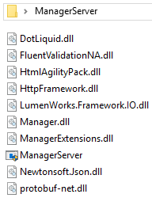
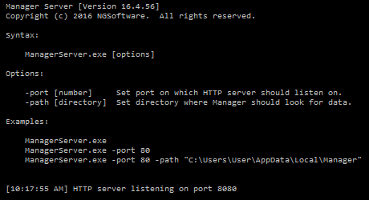
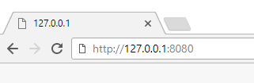
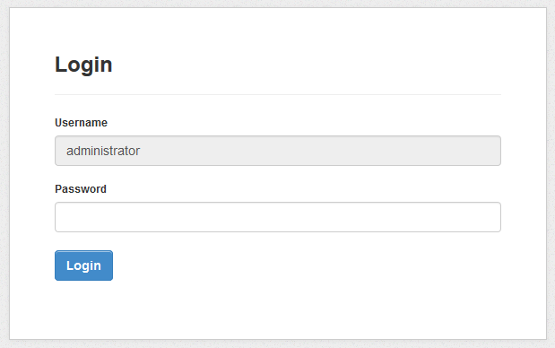
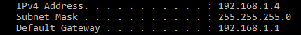
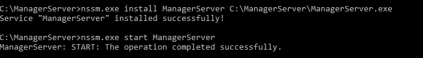

Manager requires Microsoft .NET Framework 4.5 to be installed on Windows. .NET Framework 4.5 is automatically included in Windows 8 or newer and in Windows Server 2012 or newer.
Visit Microsoft website to download and install .NET Framework 4.5 if it's not available on your computer.
Download the latest version of Manager Server from https://mngr.s3.amazonaws.com/{{ release.version }}/ManagerServer.zip.
Unzip ManagerServer.zip to desired folder.

Double-click on ManagerServer or ManagerServer.exe to launch the server. When you launch the server, the last line should say:
HTTP server listening on port 8080

By default, Manager Server will listen on port 8080. Open your web-browser and navigate to http://127.0.0.1:8080.

You should see login screen.

Default administrator password is empty so just click Login button without entering any password.
To access Manager Server from other computers within your local network, first find out IP address of the computer which is running Manager Server by running ipconfig command from command line.
Look for the line which says IPv4 Address which will reveal IP address of your computer on LAN.

Your local IP address will typically start with 10. or 192.168.. For example, if your IP address is 192.168.1.4, other computers on your local network will be able to access your Manager Server by typing into their web-browser 192.168.1.4:8080. Take into consideration that by default, Windows Firewall will block inbound connections on port 8080 so you will need to create an exception so Windows Firewall will allow connection to your computer.
In order for anyone being able to access your Manager Server, your computer must be turned on and Manager Server instance must be running. Manager Server won't start by default when your computer restarts.
To solve this problem, you can use free nssm.cc in order to automatically launch Manager Server.
nssm.exe install ManagerServer C:\your\path\to\manager\ManagerServer.exe
Then:
nssm.exe start ManagerServer

The first command will install the service and the second command will start Manager Server as a service. Now you can access Manager Server without launching ManagerServer.exe manually.
To remove Manager Server as a service, run following commands:
nssm.exe stop ManagerServer
Then:
nssm.exe remove ManagerServer
To access your Manager Server from the Internet, you will need to configure your router so it properly routes connections from the Internet into your computer running Manager Server. This is called port forwarding.
Instead of typing IP address, your users can type domain name instead. This will involve setting up A record on your domain so the domain name (or subdomain) points to IP address of your Internet router.
If you are going to allow access from the Internet, it is highly recommended you secure Manager Server by HTTPS connection. This means your connection to your server will be encrypted. We recommend to use free edition of Caddy which will run on ports 80 and 443 and will automatically install SSL certificate for your custom domain.